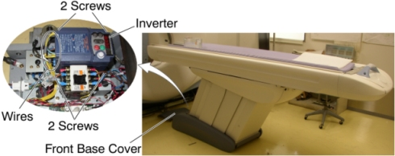

Operating Documentation
Direction 5196839-800, Rev# 6
RT16 and Xtra Service Info Adv
Operating Documentation |
| Required Persons | Preliminary Reqs | Procedure | Finalization |
|---|---|---|---|
| 1 |
Raise the Table to maximum height.
Move the Cradle and IMS to OUT limit position.
Remove power from Table by turning off 120VAC, Axial Drive and HVDC switches on Service Switch Panel.
Illustration 1: Inverter Removal

Remove the following Table covers:
Base Cover Front
-
Turn off the Table breaker.
Mark and remove the wires from the terminal on the Inverter.
Unscrew 4 screws, and remove the Inverter from the Table.
Install the new Inverter in place, and tighten the 4 screws, to fasten the Inverter.
Re-connect the wires to the terminal on the Inverter.
Power up the Table from the Service Switch Panel.
Verify that the Table moves in/out and up/down normally.
Re-install the Table covers.